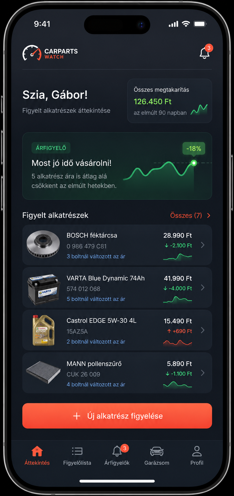
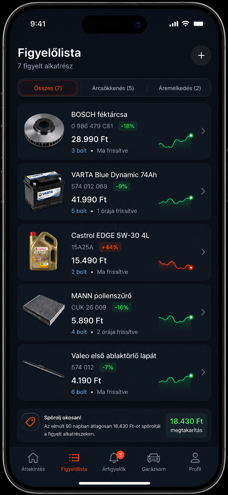
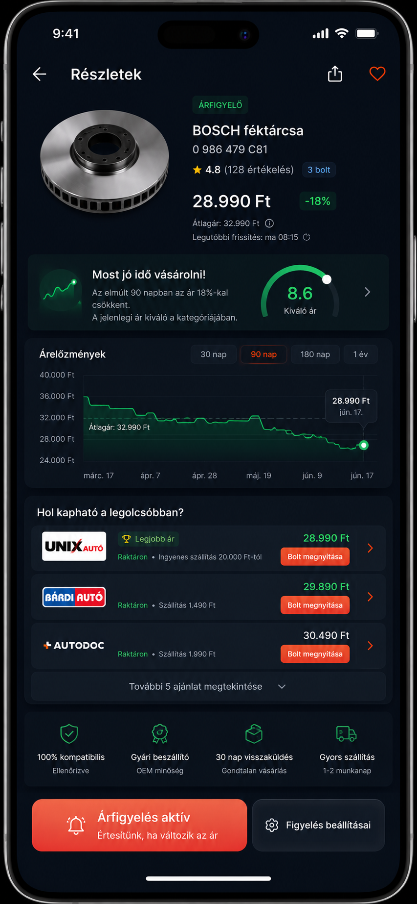

Van benne lehetőség, de nem sima árfigyelőként.
A magyar piacon sok autóalkatrész-webshop és néhány árösszehasonlító megoldás létezik, de nem látszik erős, egyszerű, fogyasztói fókuszú termék arra, hogy egy autótulajdonos konkrét alkatrészeket figyeljen, ármozgást lásson, és értesítést kapjon jó vétel esetén.
A fő probléma nem az, hogy “hol a legolcsóbb az olajszűrő?”, hanem az, hogy “biztos jó ez az én autómba, és nem fizetek-e érte hülyén sokat?”
Helyzet
Van Árukereső autóalkatrész kategória, vannak nagy alkatrészboltok, például Bárdi, Unix, AUTODOC, Kovács, ZS+U. Ezek keresésre és vásárlásra jók, de nem igazán arra, hogy az ember hosszabb távon figyeljen egy konkrét alkatrészt.
Probléma
Az átlag autótulajdonos nem biztos benne, hogy melyik alkatrész való az autójába, melyik márka vállalható, és hogy a szerelő vagy webshop ára reális-e.
Megoldás
Első lépésben egy konkrét alkatrész árfigyelése link vagy cikkszám alapján. Később ebből nőhet ki egy személyes garázs-asszisztens autóprofillal és kompatibilitási segítséggel.
Jelenlegi piaci kép
- Árukereső: létezik autóalkatrész kategória és árösszehasonlítás, de ez inkább kategória-szintű keresés.
- Bárdi / Unix: nagy katalógus, erős kereskedelmi háttér, de nem userbarát árfigyelő-termék.
- AUTODOC: nagy választék, app és garázs jellegű funkciók, de nem magyar fókuszú ármonitor.
- Kisebb webshopok: sokszor hasonló katalóguslogika, kevés valódi “spórolást segítő” UX-szel.
A piaci rés
- Egyszerű figyelőlista konkrét alkatrészekre.
- Ártörténet: most tényleg jó ár, vagy csak akciónak van nevezve?
- Értesítés, amikor érdemes megvenni.
- Cikkszám / szerelő által küldött link mentése.
- Autóhoz kötött alkatrésznapló.
- Később: VIN / alvázszám alapú pontosabb kompatibilitás.
Nem elsősorban autófanatikusoknak szólna.
A legjobb célcsoport a normál autótulajdonos, aki nem ért mélyen az autókhoz, de nem akar feleslegesen sokat fizetni. Van autója, évente költ szervizre, a szerelő küld neki cikkszámot vagy ajánlatot, ő pedig szeretné tudni, hogy az ár reális-e.
A másodlagos célcsoport a DIY szerelő és az autórajongó, aki eleve szeret árakat, cikkszámokat és márkákat figyelni. Ők aktívabbak lehetnek, de kisebb piacot jelentenek.
Link / cikkszám alapú árfigyelés
Ez azt jelenti, hogy az első verzióban az app nem próbálja meg kitalálni, pontosan melyik alkatrész jó az autóhoz. A felhasználó már hoz valamit: egy webshop linket, egy cikkszámot, vagy a szerelő által küldött alkatrésznevet.
Példa: a szerelő elküldi, hogy BOSCH 0986479xxx, vagy a user bemásol egy Bárdi / Unix / AUTODOC linket. Az app ezt menti, és azt figyeli: hol mennyi az ára, változott-e, mikor volt olcsóbb, és érdemes-e most megvenni.
Autóprofil + kompatibilitás
Ez már az a szint, amikor a user megadja az autóját, például rendszám, alvázszám / VIN vagy pontos modell alapján, és az app segít megmondani, milyen alkatrészek jók hozzá.
Ez sokkal nehezebb, mert pontos kompatibilitási adat kell hozzá. Ugyanazon autómodellből több motorváltozat, fékrendszer vagy felszereltség létezhet. Ezért ezt nem érdemes első MVP-nek választani.
Mit jelent röviden az MVP?
Első MVP: “Van egy konkrét alkatrész, figyeld az árát.”
Későbbi nagyobb verzió: “Mondd meg, milyen alkatrész kell az autómhoz, és figyeld az árát.”
Az első gyorsabban építhető, kevesebb adat kell hozzá, és hamarabb kiderül, hogy érdekli-e az embereket. A második hasznosabb, de jóval nagyobb adat- és fejlesztési probléma.
Három fejlesztésre alkalmas képernyőterv
Ezek nem végleges UI-k, hanem irányadó app-screenek: megmutatják, hogy a termék nem sima táblázatos árfigyelő lenne, hanem egy modern, személyes autóalkatrész-figyelő.



Első verzió, ami már tesztelhető
- Felhasználó linkkel vagy cikkszámmal felvesz egy alkatrészt.
- Az app naponta figyeli az árat néhány kiválasztott webshopon.
- Egyszerű ártörténet grafikon.
- Email vagy push értesítés, ha az ár beesik.
- “Jó vétel” jelzés, ha az ár a saját historikus átlag alatt van.
Az adat a nehéz rész
A pontos autó-kompatibilitási adat nem triviális. Sok szereplő TecDoc vagy hasonló adatbázisokra épül, ezekhez a hozzáférés és jogi használat nem feltétlenül egyszerű.
Ezért érdemes először konkrét linkek és cikkszámok árfigyelésével validálni az ötletet, és csak utána ráépíteni az autóprofilos-kompatibilitási réteget.
Az ötlet nem rossz, de át kell keretezni.
“Autóalkatrész árfigyelő” önmagában kicsit vékony termék. A jobb irány egy olyan eszköz, ami segít az autótulajdonosnak nem rossz alkatrészt venni, nem túlfizetni, és rendben tartani a saját autójához kapcsolódó alkatrészlistát.
Az első MVP legyen kicsi: árfigyelés konkrét linkekre / cikkszámokra. Ha erre van érdeklődés, utána lehet bővíteni autóprofilra, VIN-re, szerelői ajánlat ellenőrzésre és karbantartási előrejelzésre.
Árukereső – Autóalkatrész kategória · Bárdi Autó webshop · Unix Autó · AUTODOC Magyarország · Kovács Autóalkatrész